A flat wall gets the job done, but it rarely does anything beyond that. Texture is one of the easiest ways to add real depth and character to a room without the price tag of hiring a designer, it can shift a space from forgettable to genuinely considered with a single wall.
Textured walls do more than just look good, too. They hide small imperfections, change how light and shadow move through a room over the course of a day, and in some cases even help absorb sound, which matters more than people expect in a bedroom or media room.

How to Choose the Right One
Start with the vibe being chased. Cozy and casual points toward shiplap, slat wood, or faux stone. Glam and luxe leans toward Venetian plaster, metallics, or fabric-covered walls. Modern and minimal fits concrete, geometric panels, or clean wainscoting.
Maintenance and budget matter just as much. Textured wallpaper and faux stone stay low-maintenance and budget-friendly, while real plaster or fabric walls cost more and need more care, even if the payoff is worth it. And it's worth asking whether the wall is meant to last, peel-and-stick textures and DIY panels suit a temporary refresh, while wood, brick, and plaster hold up as genuinely timeless choices.
14 Textured Wall Ideas
1. Grasscloth Wallpaper for Earthy, Boutique-Hotel Elegance
Grasscloth wallpaper, made from real plant fibers like jute, hemp, or sisal, brings an organic texture that makes a room feel instantly more boutique.
Every roll carries its own subtle color variation, which is part of what makes the finished wall feel genuinely one-of-a-kind rather than mass-produced.
It fits a bedroom, office, or reading nook especially well, just worth knowing it isn't the most wipeable surface, so it's not the best fit for high-traffic, high-mess zones.
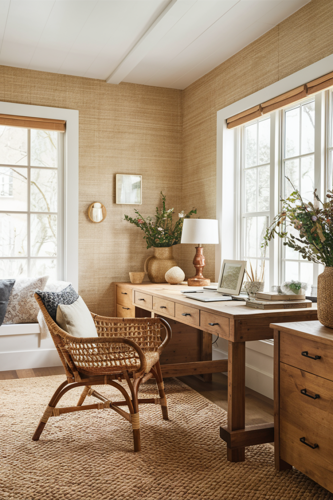
2. Metallic Finishes for Subtle Shimmer
Brushed gold, copper, or silver finishes bring a quiet shimmer into a room without tipping into anything resembling a disco ball.
They work especially well in a powder room, feature wall, or moody lounge, and gold leaf leans glam while a matte metallic paint stays more understated.
Blending a metallic finish with another texture, gold alongside Venetian plaster, or paired with wood slats, builds even more depth into the same wall.
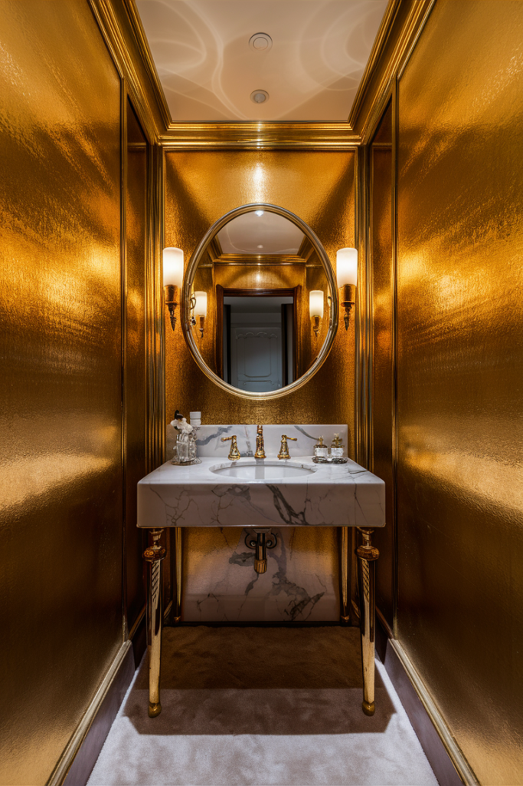
3. Hand-Troweled Texture for Something Truly One-of-a-Kind
A hand-troweled plaster or stucco finish brings genuine organic texture that no two walls will ever replicate exactly the same way.
It suits Mediterranean, boho, or eclectic interiors especially well, adding natural movement that flat paint simply can't.
It's the kind of finish that invites touch every time someone walks past, textured, personal, and quietly a little wild.
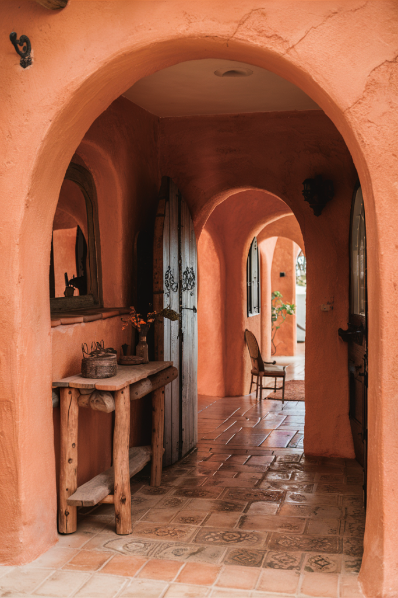
4. Fabric-Covered Walls for Soft, Sound-Dampening Luxury
Fabric wall coverings add an instantly luxe, cozy quality that paint or wallpaper rarely manages on its own.
Velvet, linen, or suede all work, and they're a genuine asset in a media room or home office where comfort and quiet both matter.
They can be stapled, stretched, or paneled depending on the look, and as a bonus, fabric does real work absorbing sound in a way hard surfaces never will.
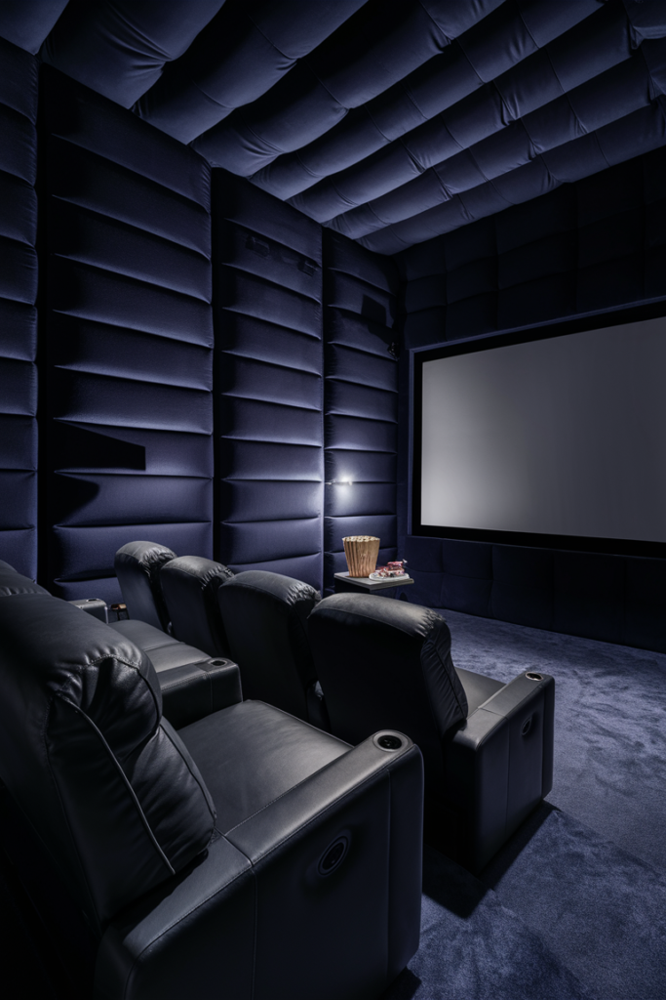
5. Wainscoting for a Classic That Never Fades
Wainscoting has the same quality as a crisp, well-fitted shirt, it simply always looks put together, regardless of trend cycles.
Beadboard leans cottage, board and batten leans modern farmhouse, and raised panels push the whole look more formal and traditional.
It fits dining rooms and hallways especially well, and holds up as one of the most reliably timeless choices on this entire list.
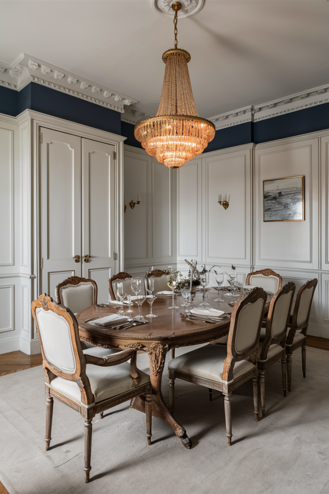
6. Concrete Finish for Raw, Refined Edge
A concrete wall finish sounds like an unlikely interior choice, but done right it's equal parts raw and refined, not cold and unfinished.
It suits modern or minimalist homes especially well, and looks genuinely striking behind sleek metal or glass furniture.
It adds texture and depth without ever feeling cluttered, which is exactly the quality a pared-back space usually needs most.
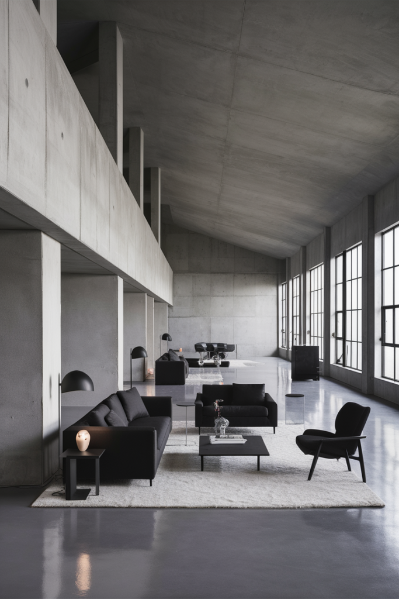
7. Geometric Panels for a Bold Statement
3D geometric wall panels function almost like sculpture mounted directly on the wall, genuinely bold, and not for anyone looking for something subtle.
They come in foam, MDF, plaster, or wood, and can be painted one unified color for a modern monochrome look, or color-blocked for something louder.
They suit a feature wall in an office or dining room especially well, anywhere a real wow moment is actually the goal.
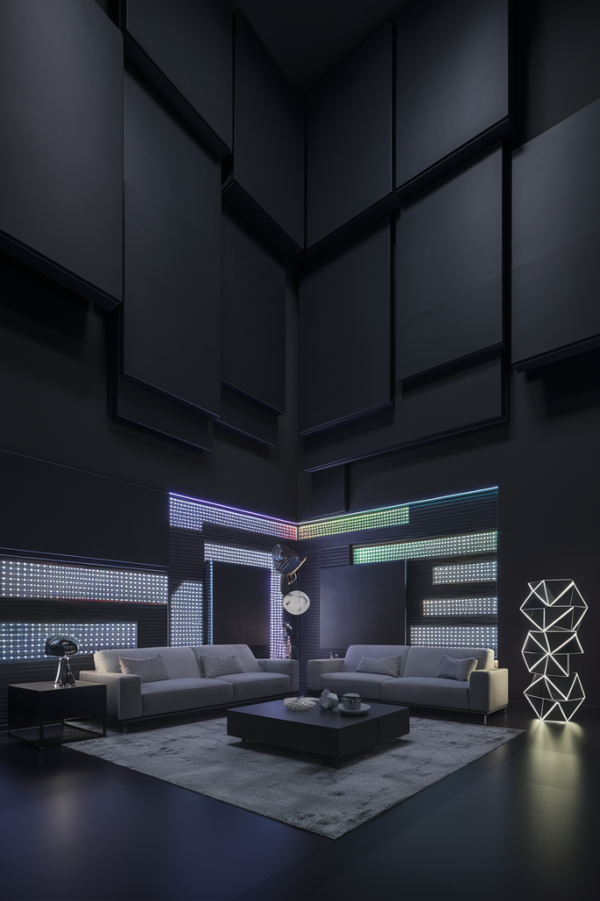
8. Wood Paneling for Timeless, Grown-Up Charm
Modern wood paneling has shed its dated basement reputation entirely, done well, it reads as sleek and genuinely sophisticated.
Vertical panels can make a ceiling feel taller, and the wood can be stained for warmth or painted for something crisper and more updated.
It works beautifully in a home office, hallway, or cozy den, and real wood texture adds a richness that's hard to fake with anything else.
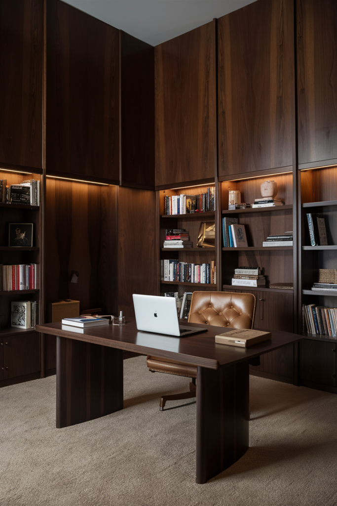
9. Textured Wallpaper for Instant, Low-Risk Drama
Textured wallpaper delivers the look of texture without requiring any real construction skill, which makes it the lowest-risk option on this entire list.
Faux leather, grasscloth-style prints, linen, and stone finishes all exist in wallpaper form now, and peel-and-stick options make both installing and removing it painless.
A bedroom accent wall is where it shines most, giving a room real depth without committing to anything structural.
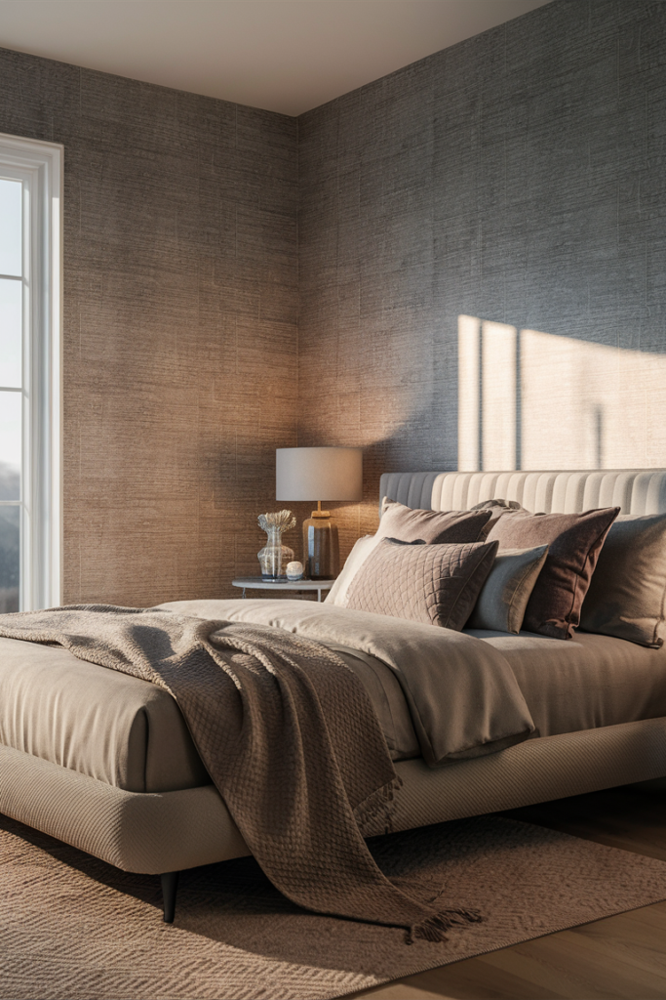
10. Exposed Brick for an Urban Loft Feel
Exposed brick brings an effortlessly cool, urban loft quality that almost nothing else replicates, it's gritty, textured, and genuinely ages well over time.
Left natural, it reads as raw and industrial. Painted white or charcoal, it shifts toward something more polished and modern.
Pairing it with plants and wood accents softens the edges, keeping the room from feeling like an actual warehouse.
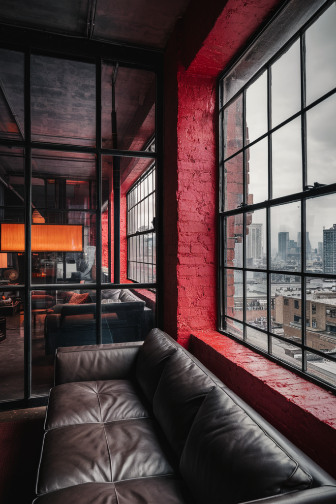
11. Shiplap for Instant Farmhouse Warmth
Shiplap remains the go-to choice for anyone leaning into farmhouse or cozy cottage style, and for good reason, it adds real texture without feeling over the top.
Long wood planks installed horizontally or vertically work in a living room, bedroom, or as a feature wall behind a bed.
Paint it crisp white for a clean, classic look, or go bold with navy, sage, or even black for something with more mood.
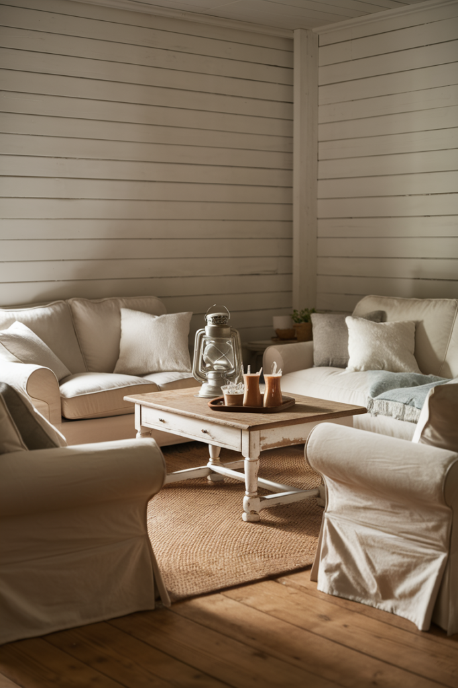
12. Faux Stone for Real Texture, Less Hassle
Faux stone panels deliver the look of real stacked stone without the weight, cost, or the actual stonemason required to install it.
Many versions are peel-and-stick or screw-on, which makes them realistic even for a first DIY attempt.
They work especially well around a fireplace or as a living room accent wall, adding a lodge-like warmth without turning the whole room into a medieval great hall.
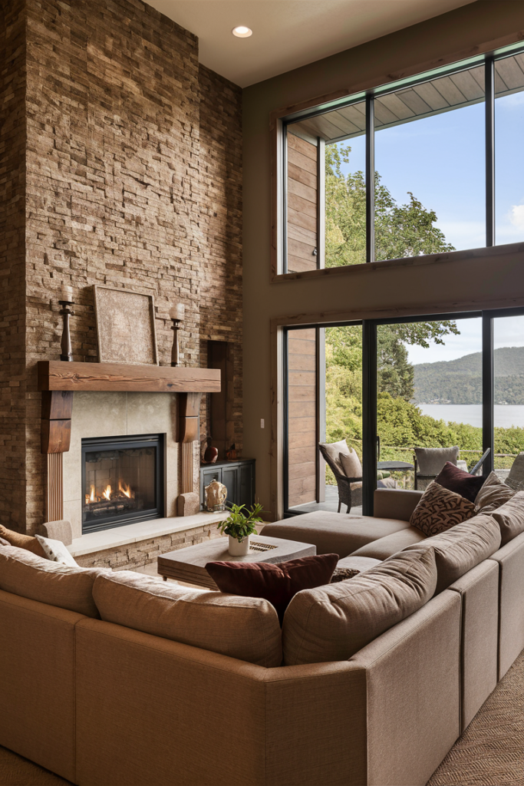
13. Venetian Plaster for Understated Glam
Venetian plaster is the textural equivalent of a well-tailored outfit, refined, a little mysterious, and consistently elegant without trying too hard.
It shines in a dining room, entryway, or primary bedroom, reflecting light in soft, layered ways that make a wall feel genuinely rich.
It works equally well in a neutral taupe or greige, or in a moodier deep navy or forest green, depending on how dramatic the room wants to feel.
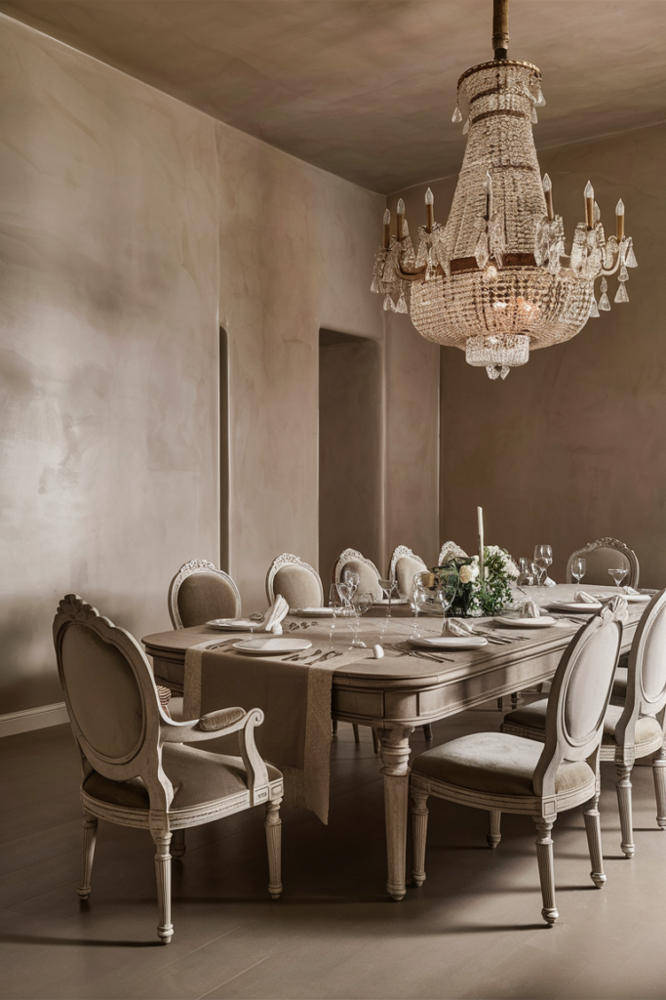
14. Slat Wood for a Soothing, Modern Rhythm
Vertical wood slats create a quiet rhythm across a wall that reads as both modern and Scandinavian at once, and they're far more versatile than they first appear.
Natural wood keeps the look warm, while painting the slats black pushes it toward something moodier and more dramatic.
They work especially well behind a TV or in an entryway, and they quietly help with sound, reducing echo and hiding cables behind the slats at the same time.
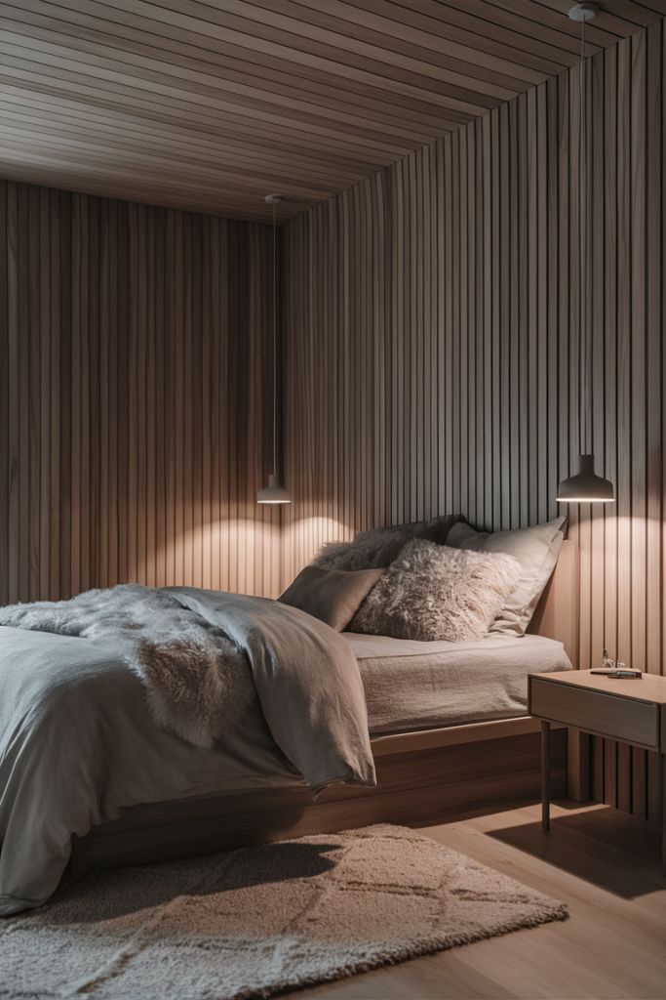
Why Texture Changes a Room More Than People Expect
Flat walls read as static no matter how good the paint color is. Texture adds genuine personality, rustic shiplap and luxe Venetian plaster sit at opposite ends of the style spectrum, but both give a wall real character that flat paint never quite achieves on its own.
Texture also works with every design direction, from rustic and warm to sleek and modern, which is part of why it's worth considering in almost any room rather than being locked to one particular style.
Final Thoughts
Walls hold up the art, the shelves, and basically everything else in a room, and they rarely get much real credit for it. Adding texture is one of the simplest ways to make a space feel more intentional and more like an actual reflection of whoever lives there.
Whether the goal is cozy and rustic or sleek and genuinely modern, there's a textured wall idea that fits. Pick the one that matches the room, and let it do the rest of the work.